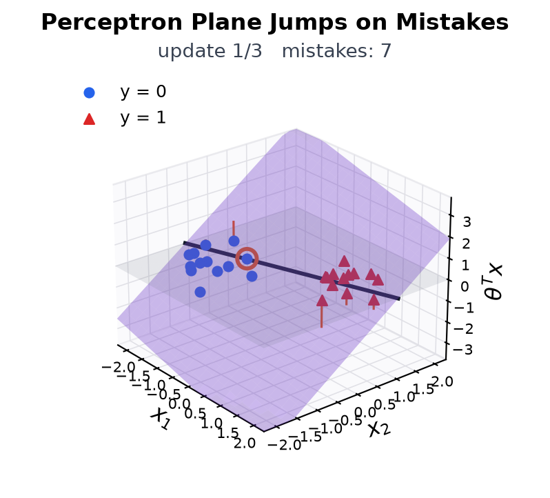
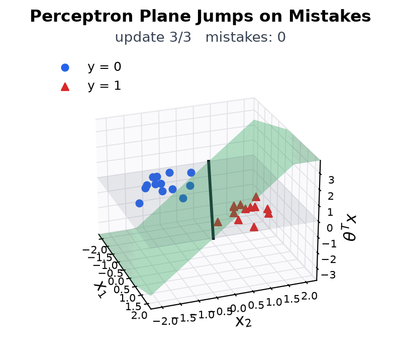
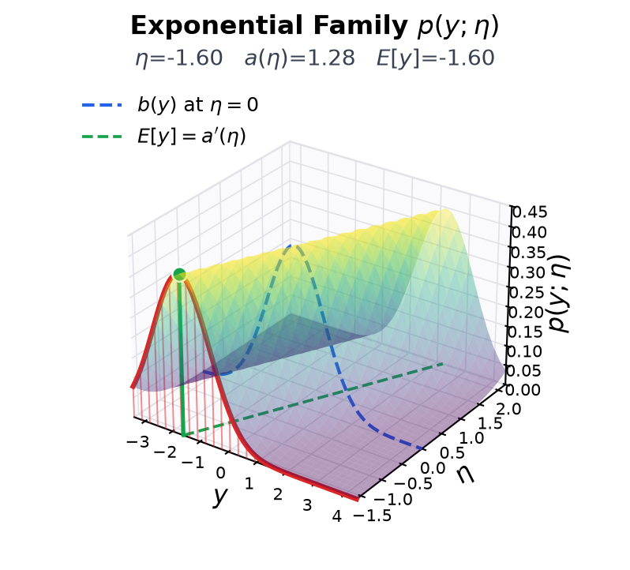
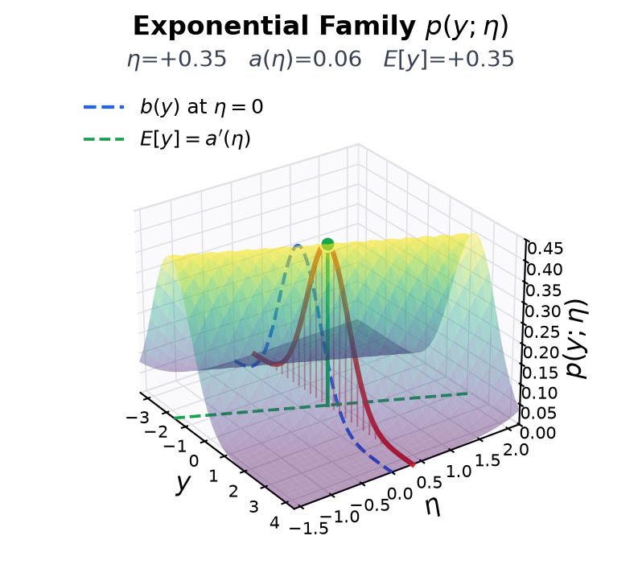
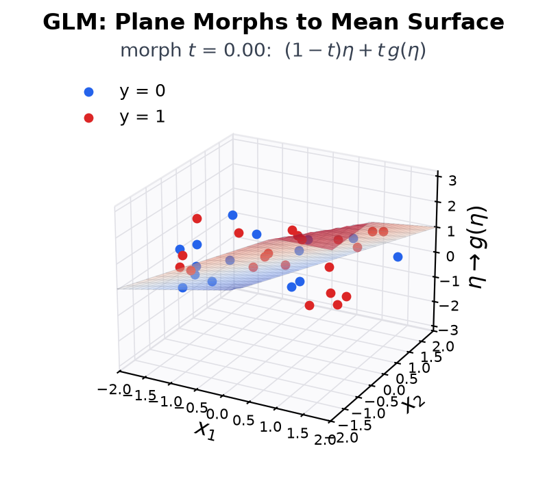
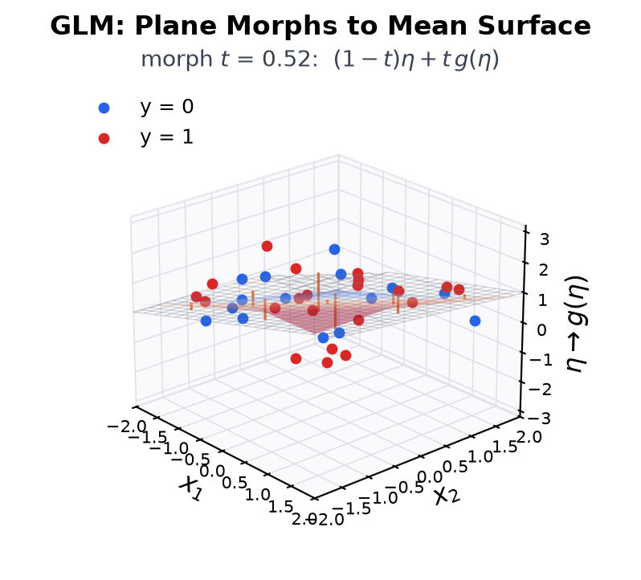
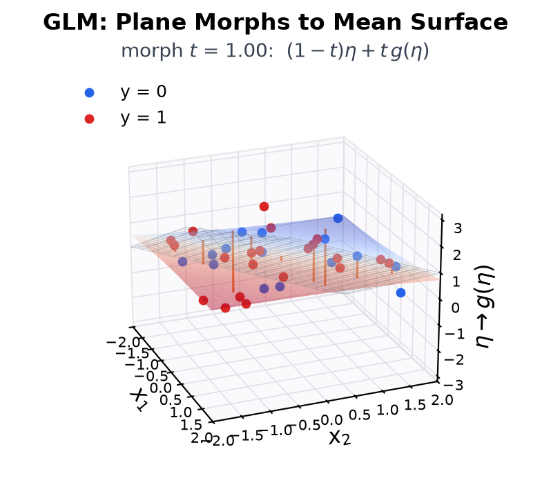
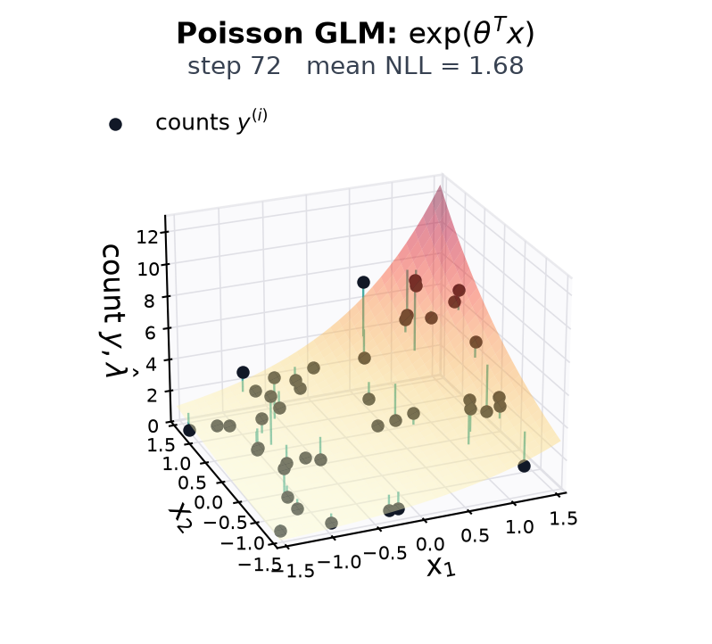
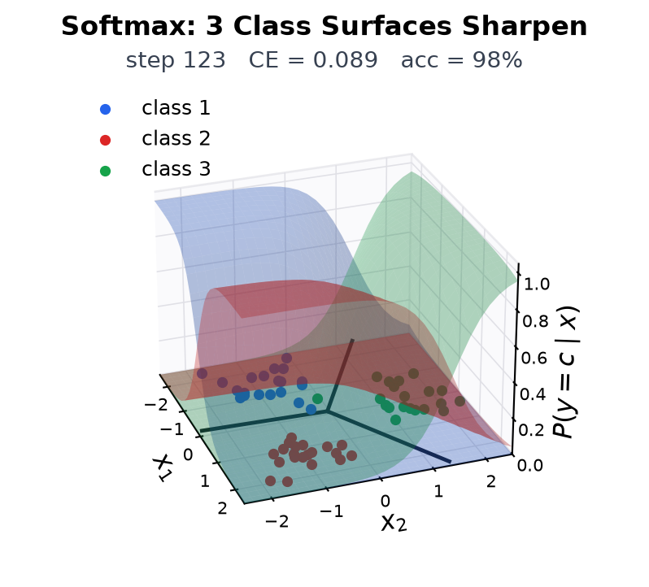
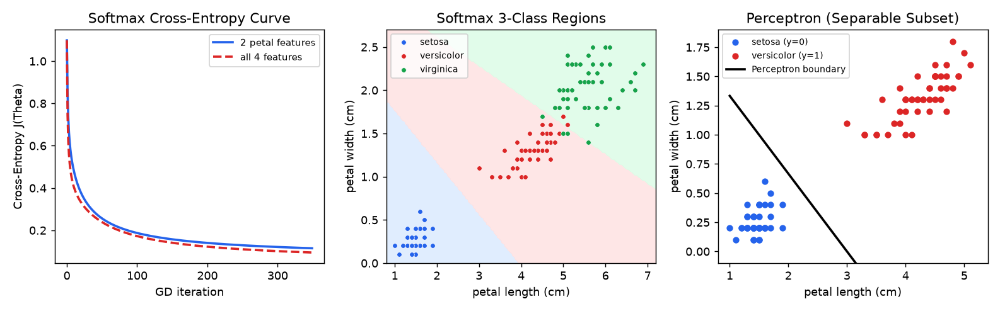

Perceptron, Exponential Family और Generalized Linear Models
Theory
इस lecture में: Perceptron learning algorithm (threshold function, update rule, और Logistic Regression से अंतर), Exponential Family का सामान्य रूप (\(\eta, T(y), a(\eta), b(y)\)), Bernoulli और Gaussian distributions को Exponential Family में ढालना, Generalized Linear Models (GLMs) की तीन assumptions, canonical response और link functions, GLM के रूप में Ordinary Least Squares व Logistic Regression, गिनती वाले data के लिए Poisson Regression, और multi-class classification के लिए Softmax Regression व Cross-Entropy loss।
1. एक line में idea
पिछले lectures में आपने देखा कि Linear Regression में prediction \(\theta^T x\) था, और Logistic Regression में \(\frac{1}{1 + e^{-\theta^T x}}\)। पहली नज़र में लगता है कि हर नए काम के लिए हमें कोई नया formula सोचना पड़ता है। पर असल में ये अलग-अलग जुगाड़ नहीं हैं, बल्कि एक ही परिवार के सदस्य हैं।
इस lecture में दो मुख्य हिस्से हैं। पहले हिस्से में हम Perceptron देखेंगे, जो binary classification का एक सख़्त (hard-threshold) नियम है और केवल अपनी गलतियों से सीखता है। दूसरे हिस्से में हम Exponential Family और Generalized Linear Models (GLMs) का एकीकृत ढाँचा बनाएँगे। आप देखेंगे कि जैसे ही आप यह तय करते हैं कि target \(y\) किस तरह का data है (continuous संख्या, 0/1 सिक्का, गिनती \(0, 1, 2, \dots\), या \(k\) में से एक category), GLM की मशीन अपने-आप सही hypothesis, सही loss function, और सही gradient update नियम निकाल कर दे देती है।
2. Perceptron Learning Algorithm
Binary classification में label \(y \in \{0, 1\}\) होता है। Logistic Regression में हमने linear score \(z = \theta^T x\) को smooth sigmoid से गुज़ारा था ताकि \(0\) और \(1\) के बीच की probability मिले। अगर हमें probability नहीं, बल्कि सीधे सख़्त \(0\) या \(1\) का फ़ैसला चाहिए, तो हम threshold function (step function) लगा सकते हैं:
\[g(z) = \begin{cases} 1 & \text{if } z \ge 0 \\ 0 & \text{if } z < 0 \end{cases}\]
यहाँ \(x_0 = 1\) मानकर हमारी hypothesis बनती है \(h_\theta(x) = g(\theta^T x)\)। यानी hyperplane \(\theta^T x = 0\) के एक तरफ़ सभी बिंदुओं के लिए जवाब \(1\) है और दूसरी तरफ़ \(0\)।
Perceptron update rule दिखने में ठीक LMS और Logistic Regression जैसा है:
\[\theta_j := \theta_j + \alpha \left( y^{(i)} - h_\theta(x^{(i)}) \right) x_j^{(i)}\]
Vector रूप में इसे \(\theta := \theta + \alpha \left(y^{(i)} - h_\theta(x^{(i)})\right) x^{(i)}\) लिखते हैं। लेकिन यहाँ \(h_\theta(x^{(i)})\) केवल \(0\) या \(1\) हो सकता है, इसलिए अंतर \(\left(y^{(i)} - h_\theta(x^{(i)})\right)\) सिर्फ़ तीन मान लेता है: \(0\), \(+1\), या \(-1\)। इसका ज्यामितीय व्यवहार बहुत रोचक है:
- जब prediction सही हो (\(h_\theta(x^{(i)}) = y^{(i)}\)): अंतर \(0\) है। \(\theta\) में कोई बदलाव नहीं होता, चाहे बिंदु boundary के कितना भी पास क्यों न हो।
- जब सच \(y^{(i)} = 1\) हो पर model ने \(0\) कहा हो: इसका मतलब \(\theta^T x^{(i)} < 0\) था। तब नियम \(\theta := \theta + \alpha x^{(i)}\) करता है। नया score \((\theta + \alpha x^{(i)})^T x^{(i)} = \theta^T x^{(i)} + \alpha \|x^{(i)}\|^2\) पहले से ज़्यादा धनात्मक हो जाता है, यानी plane घूमकर इस बिंदु को सही तरफ़ लेने की कोशिश करता है।
- जब सच \(y^{(i)} = 0\) हो पर model ने \(1\) कहा हो: तब \(\theta^T x^{(i)} \ge 0\) था। नियम \(\theta := \theta - \alpha x^{(i)}\) घटाता है, जिससे नया score \(\theta^T x^{(i)} - \alpha \|x^{(i)}\|^2\) घटकर ऋणात्मक तरफ़ चला जाता है।
नोट करें कि एकल Perceptron में positive scaling \(\alpha > 0\) यदि शून्य से शुरू (\(\theta = 0\)) किया जाए, तो केवल \(\theta\) की लंबाई बदलती है, boundary \(\theta^T x = 0\) की दिशा नहीं, इसलिए अक्सर \(\alpha = 1\) भी रख लिया जाता है।
Perceptron बनाम Logistic Regression
दोनों का update समीकरण एक जैसा दिखता है, फिर भी दोनों की प्रकृति बिल्कुल अलग है:
| पहलू | Perceptron | Logistic Regression |
|---|---|---|
| Activation \(g(z)\) | सख़्त step function \(1\{z \ge 0\}\) | Smooth sigmoid \(\frac{1}{1 + e^{-z}}\) |
| Output का अर्थ | केवल class label \(\{0, 1\}\), कोई probability नहीं | सुसंगत probability \(p(y=1 \mid x; \theta)\) |
| गणितीय आधार | ज्यामितीय गलती-सुधार नियम (Maximum Likelihood नहीं) | Bernoulli likelihood का Maximum Likelihood |
| Update कब होता है | केवल गलत वर्गीकृत उदाहरणों पर अचानक छलाँग | हर उदाहरण पर \((y - h_\theta(x))\) के अनुपात में smooth कदम |
| Overlapping data पर | कभी शांत नहीं होता, boundary कूदती रहती है | एक अद्वितीय global optimum पर स्थिर हो जाता है |
यदि training data linearly separable है (अर्थात कोई एक hyperplane दोनों classes को बिना किसी गलती के बाँट सकता है), तो Rosenblatt के Perceptron Convergence Theorem के अनुसार Perceptron सीमित संख्या में गलतियाँ करके रुक जाता है। पर यदि data में थोड़ा भी शोर (noise) या overlap हो, तो यह अनंत काल तक भटकता रह सकता है।
3. Exponential Family
अब हम GLMs की नींव रखते हैं। कोई probability distribution Exponential Family का सदस्य कहलाता है यदि उसे इस मानक रूप में लिखा जा सके:
\[p(y; \eta) = b(y) \exp\left( \eta^T T(y) - a(\eta) \right)\]
यहाँ हर प्रतीक की एक स्पष्ट भूमिका है:
| प्रतीक | नाम | भूमिका |
|---|---|---|
| \(\eta\) | Natural (या canonical) parameter | Distribution का मुख्य नियंत्रक parameter |
| \(T(y)\) | Sufficient statistic | \(y\) से निकाली गई पर्याप्त जानकारी (अधिकतर मामलों में बस \(T(y) = y\)) |
| \(a(\eta)\) | Log partition function | Normalization पद, ताकि कुल probability का जोड़ या समाकलन \(1\) रहे |
| \(b(y)\) | Base measure | केवल \(y\) पर निर्भर आधार फलन (\(\eta\) से स्वतंत्र) |
\(a(\eta)\) का सबसे उपयोगी गुण: चूँकि कुल probability \(1\) होती है, इसलिए \(\int b(y) \exp(\eta T(y))\,dy = \exp(a(\eta))\) (या discrete मामले में \(\sum_y\))। दोनों तरफ़ \(\eta\) के सापेक्ष अवकलन (differentiate) करने पर बिना अलग-अलग जोड़ निकाले सीधे mean और variance मिल जाते हैं:
\[E[T(y); \eta] = \frac{\partial a(\eta)}{\partial \eta}, \qquad \mathrm{Var}(T(y); \eta) = \frac{\partial^2 a(\eta)}{\partial \eta^2}\]
क्योंकि variance हमेशा अऋणात्मक (\(\ge 0\)) होता है, इसलिए \(a''(\eta) \ge 0\), यानी \(a(\eta)\) हमेशा convex होता है। यही कारण है कि Exponential Family के मॉडलों में log-likelihood हमेशा \(\eta\) के सापेक्ष concave बनता है।
सदस्य 1: Bernoulli Distribution
सिक्का उछालने जैसे binary target \(y \in \{0, 1\}\) के लिए \(\mathrm{Bernoulli}(\phi)\) लें, जहाँ \(p(y=1; \phi) = \phi\):
\[\begin{aligned} p(y; \phi) &= \phi^y (1 - \phi)^{1 - y} \\ &= \exp\left( y \log \phi + (1 - y) \log(1 - \phi) \right) \\ &= \exp\left( \left(\log \frac{\phi}{1 - \phi}\right) y + \log(1 - \phi) \right) \end{aligned}\]
मानक रूप \(b(y)\exp(\eta T(y) - a(\eta))\) से तुलना करें:
- \(T(y) = y\) और \(b(y) = 1\)।
- Natural parameter है \(\eta = \log \frac{\phi}{1 - \phi}\) (जिसे log-odds कहते हैं)। इसे \(\phi\) के लिए हल करें तो \(e^\eta = \frac{\phi}{1-\phi}\), जिससे मिलता है:
\[\phi = \frac{1}{1 + e^{-\eta}}\]
देखिए, Logistic Regression का sigmoid function हमने मन से नहीं गढ़ा था; वह Bernoulli के natural parameter से अपने-आप निकल आया! अब \(1 - \phi = \frac{1}{1 + e^\eta}\) रखने पर \(a(\eta) = -\log(1 - \phi) = \log(1 + e^\eta)\) मिलता है। (जाँच लें: \(a'(\eta) = \frac{e^\eta}{1+e^\eta} = \phi = E[y]\)।)
सदस्य 2: Gaussian Distribution
Linear Regression में आपने देखा था कि variance \(\sigma^2\) का मान \(\theta\) के Maximum Likelihood estimate को नहीं बदलता। इसलिए सरलता के लिए \(\sigma^2 = 1\) तय करके \(\mathcal{N}(\mu, 1)\) लिखते हैं:
\[\begin{aligned} p(y; \mu) &= \frac{1}{\sqrt{2\pi}} \exp\left( -\frac{1}{2}(y - \mu)^2 \right) \\ &= \frac{1}{\sqrt{2\pi}} \exp\left(-\frac{1}{2}y^2\right) \exp\left( \mu y - \frac{1}{2}\mu^2 \right) \end{aligned}\]
यहाँ \(b(y) = \frac{1}{\sqrt{2\pi}} \exp\left(-\frac{1}{2}y^2\right)\), \(T(y) = y\), natural parameter सीधे \(\eta = \mu\) है, और \(a(\eta) = \frac{1}{2}\mu^2 = \frac{1}{2}\eta^2\) है। (जाँच लें: \(a'(\eta) = \eta = \mu\) और \(a''(\eta) = 1\)।)
4. Generalized Linear Models (GLMs) का निर्माण
जब भी आपको features \(x\) से किसी target \(y\) का अनुमान लगाना हो, एक Generalized Linear Model तीन सीधी assumptions से बनता है:
- Exponential Family की शर्त: \(y \mid x; \theta \sim \mathrm{ExponentialFamily}(\eta)\)। यानी \(x\) और \(\theta\) दिए होने पर \(y\) आपके चुने हुए Exponential Family वितरण का पालन करता है।
- Expected value का लक्ष्य: नए \(x\) के लिए हमें \(T(y)\) का औसत मान बताना है। जब \(T(y) = y\) हो, तो हमारी hypothesis होगी \(h_\theta(x) = E[y \mid x; \theta]\)।
- रेखीय जुड़ाव: Natural parameter और input features आपस में रेखीय रूप से जुड़े हैं: \(\eta = \theta^T x\) (और यदि \(\eta\) एक vector है तो प्रत्येक अवयव के लिए \(\eta_c = \theta_c^T x\))।
Canonical Response और Canonical Link
- वह फलन \(g(\eta) = E[T(y); \eta] = a'(\eta)\), जो natural parameter \(\eta\) को वितरण के माध्य \(\mu\) में बदलता है, canonical response function कहलाता है। इसके साथ हर GLM की hypothesis बस \(h_\theta(x) = g(\theta^T x)\) बन जाती है।
- इसका उलटा फलन \(g^{-1}(\mu) = \eta\), जो माध्य \(\mu\) से वापस \(\eta\) देता है, canonical link function कहलाता है।
अब हमारे पुराने दोनों मॉडल दो पंक्तियों में व्युत्पन्न हो जाते हैं:
- GLM के रूप में Ordinary Least Squares (OLS): Continuous \(y \in \mathbb{R}\) के लिए Gaussian चुनें। यहाँ \(\mu = \eta\), यानी canonical response पहचान फलन \(g(\eta) = \eta\) है। अतः \(h_\theta(x) = E[y \mid x; \theta] = \mu = \eta = \theta^T x\)।
- GLM के रूप में Logistic Regression: Binary \(y \in \{0, 1\}\) के लिए Bernoulli चुनें। यहाँ \(\phi = \frac{1}{1+e^{-\eta}}\), यानी canonical response logistic फलन है और canonical link logit \(\log\frac{\phi}{1-\phi}\) है। अतः \(h_\theta(x) = E[y \mid x; \theta] = \phi = \frac{1}{1 + e^{-\theta^T x}}\)।
सभी GLMs के लिए एक साझा Learning Rule
जब \(T(y) = y\) और \(\eta = \theta^T x\) हो, तो एक उदाहरण का conditional log-likelihood है \(\ell(\theta) = \log b(y) + \eta y - a(\eta)\)। \(\theta_j\) के सापेक्ष chain rule से अवकलन करें:
\[\frac{\partial \ell(\theta)}{\partial \theta_j} = \left( y - a'(\eta) \right) \frac{\partial \eta}{\partial \theta_j} = \left( y - g(\theta^T x) \right) x_j = \left( y - h_\theta(x) \right) x_j\]
अर्थात Exponential Family का कोई भी सदस्य चुनें, Maximum Likelihood के लिए Stochastic Gradient Ascent update हमेशा एक ही सुंदर रूप लेता है:
\[\theta := \theta + \alpha \left( y^{(i)} - h_\theta(x^{(i)}) \right) x^{(i)}\]
5. Poisson Regression: गिनती वाले Data के लिए GLM
मान लीजिए \(y \in \{0, 1, 2, 3, \dots\}\) किसी घटना की गिनती है: जैसे एक घंटे में server पर आए requests, दुकान में आए ग्राहक, या दिन भर में कॉल सेंटर के फ़ोन। यहाँ साधारण Linear Regression ऋणात्मक संख्याएँ भी predict कर सकता है जो अर्थहीन हैं। गिनती के लिए स्वाभाविक वितरण Poisson(\(\lambda\)) है, जहाँ माध्य दर \(\lambda > 0\) है:
\[p(y; \lambda) = \frac{e^{-\lambda} \lambda^y}{y!} = \frac{1}{y!} \exp\left( y \log \lambda - \lambda \right)\]
Exponential Family से मिलान करने पर तुरंत मिलता है:
- \(b(y) = \frac{1}{y!}\) और \(T(y) = y\)।
- \(\eta = \log \lambda\) (canonical link है \(\log \lambda\)), इसलिए \(\lambda = e^\eta\)।
- \(a(\eta) = \lambda = e^\eta\)।
अब GLM की तीसरी शर्त \(\eta = \theta^T x\) लगाएँ। चूँकि canonical response \(g(\eta) = a'(\eta) = e^\eta\) है, हमारी hypothesis बनती है:
\[h_\theta(x) = E[y \mid x; \theta] = \lambda = \exp(\theta^T x)\]
यह surface हमेशा धनात्मक रहती है और features के साथ घातांकीय (exponential) रूप से बढ़ती है। ऊपर के सार्वत्रिक सूत्र से इसका gradient ascent नियम सीधे लिख सकते हैं:
\[\theta := \theta + \alpha \left( y^{(i)} - \exp(\theta^T x^{(i)}) \right) x^{(i)}\]
| Target \(y\) का प्रकार | वितरण | Natural param \(\eta\) | \(a(\eta)\) | Canonical response \(h_\theta(x)\) |
|---|---|---|---|---|
| Real \(y \in \mathbb{R}\) | Gaussian | \(\mu\) | \(\frac{1}{2}\eta^2\) | \(\theta^T x\) (OLS) |
| Binary \(y \in \{0, 1\}\) | Bernoulli | \(\log\frac{\phi}{1-\phi}\) | \(\log(1 + e^\eta)\) | \(\frac{1}{1 + e^{-\theta^T x}}\) (Logistic) |
| Count \(y \in \{0, 1, 2, \dots\}\) | Poisson | \(\log \lambda\) | \(e^\eta\) | \(\exp(\theta^T x)\) (Poisson GLM) |
| \(k\) classes \(y \in \{1, \dots, k\}\) | Multinomial | \(\eta_c = \log\frac{\phi_c}{\phi_k}\) | \(\log\sum_{j=1}^k e^{\eta_j}\) | \(\frac{\exp(\theta_c^T x)}{\sum_{j=1}^k \exp(\theta_j^T x)}\) (Softmax) |
6. Softmax Regression और Cross-Entropy
जब वर्गीकरण में दो से अधिक यानी \(k\) परस्पर अनन्य (mutually exclusive) classes हों, \(y \in \{1, 2, \dots, k\}\), तब हम Categorical (एकल-प्रयास Multinomial) वितरण इस्तेमाल करते हैं। मान लें \(p(y = c; \phi) = \phi_c\), जहाँ \(\sum_{c=1}^{k} \phi_c = 1\)। क्योंकि कुल योग \(1\) है, \(\phi_k = 1 - \sum_{c=1}^{k-1} \phi_c\) बाक़ी से तय हो जाता है।
यहाँ \(T(y) \in \mathbb{R}^{k-1}\) एक indicator vector लेते हैं जिसका \(c\)-वाँ घटक \((T(y))_c = 1\{y = c\}\) है (\(c = 1, \dots, k-1\) के लिए)। तब \(1\{y = k\} = 1 - \sum_{c=1}^{k-1} 1\{y = c\}\) लिखकर probability को यूँ ढालते हैं:
\[\begin{aligned} p(y; \phi) &= \phi_1^{1\{y=1\}} \phi_2^{1\{y=2\}} \cdots \phi_k^{1 - \sum_{c=1}^{k-1} 1\{y=c\}} \\ &= \exp\left( \sum_{c=1}^{k-1} 1\{y=c\} \log\frac{\phi_c}{\phi_k} + \log \phi_k \right) \end{aligned}\]
यह ठीक \(b(y)\exp(\eta^T T(y) - a(\eta))\) के रूप में है, जहाँ \(b(y) = 1\), \(\eta_c = \log\frac{\phi_c}{\phi_k}\), और \(a(\eta) = -\log \phi_k\)। सुविधा के लिए \(\eta_k = 0\) लिख लें, तो हर \(c \in \{1, \dots, k\}\) के लिए \(\phi_c = \phi_k e^{\eta_c}\)। इन्हें जोड़कर \(1\) के बराबर रखने पर \(\phi_k \sum_{j=1}^k e^{\eta_j} = 1\), जिससे निकलता है:
\[\phi_c = \frac{e^{\eta_c}}{\sum_{j=1}^{k} e^{\eta_j}}\]
इस मानचित्रण को softmax function कहते हैं। अब हर class \(c\) के लिए अपना parameter vector \(\theta_c \in \mathbb{R}^{n+1}\) रखकर \(\eta_c = \theta_c^T x\) लगाएँ (यदि \(\theta_k = 0\) बाँध दें तो ठीक \(k-1\) स्वतंत्र vectors बचते हैं, पर व्यवहार में सममिति के लिए सभी \(k\) vectors \(\Theta = [\theta_1, \dots, \theta_k]\) रखना आसान होता है):
\[p(y = c \mid x; \Theta) = \frac{\exp(\theta_c^T x)}{\sum_{j=1}^{k} \exp(\theta_j^T x)}\]
Cross-Entropy Loss और उसका Gradient
Maximum Likelihood का अर्थ है सही class की अनुमानित probability के ऋण log को न्यूनतम करना। पूरे training set पर औसत लेने से Cross-Entropy loss बनता है:
\[J(\Theta) = -\frac{1}{m} \sum_{i=1}^{m} \sum_{c=1}^{k} 1\{y^{(i)} = c\} \log \frac{\exp(\theta_c^T x^{(i)})}{\sum_{j=1}^{k} \exp(\theta_j^T x^{(i)})}\]
यदि सही class \(c^*\) के लिए model \(0.99\) probability दे तो \(-\log(0.99) \approx 0.01\) (बहुत कम दंड), और यदि गलत आत्मविश्वास से \(0.01\) दे तो \(-\log(0.01) \approx 4.6\) (भारी दंड)। किसी एक \(\theta_c\) के सापेक्ष अवकलन करने पर \(\frac{\partial}{\partial \theta_c} \log \sum_{j=1}^k e^{\theta_j^T x} = p(y=c \mid x; \Theta)\, x\) आता है, जिससे gradient बहुत साफ़ रूप लेता है:
\[\nabla_{\theta_c} J(\Theta) = \frac{1}{m} \sum_{i=1}^{m} \left( p(y = c \mid x^{(i)}; \Theta) - 1\{y^{(i)} = c\} \right) x^{(i)}\]
Softmax Regression: Algorithm step by step
- प्रत्येक input में \(x_0^{(i)} = 1\) जोड़ें और weight matrix \(\Theta \in \mathbb{R}^{(n+1) \times k}\) को शून्य से आरंभ करें।
- हर उदाहरण के लिए class scores \(z_c^{(i)} = \theta_c^T x^{(i)}\) निकालें और softmax से probabilities \(\hat{p}_c^{(i)} = \frac{\exp(z_c^{(i)})}{\sum_{j=1}^k \exp(z_j^{(i)})}\) बनाएँ।
- One-hot सत्य संकेत \(Y_{ic} = 1\{y^{(i)} = c\}\) घटाकर अंतर \((\hat{p}_c^{(i)} - Y_{ic})\) प्राप्त करें।
- पूरे batch पर औसत gradient \(\nabla_{\theta_c} J = \frac{1}{m} \sum_{i=1}^m (\hat{p}_c^{(i)} - Y_{ic})\, x^{(i)}\) निकालें और \(\theta_c := \theta_c - \alpha \nabla_{\theta_c} J\) से update करें।
- Convergence के बाद नए \(x\) के लिए \(\arg\max_c\, \theta_c^T x\) को चुनी हुई class घोषित करें।
7. Practical बातें और आम गलतियाँ
- Softmax में overflow से बचें (max-shift trick): यदि कोई score \(z_c = 800\) हो जाए तो कंप्यूटर में \(\exp(800)\) अनंत (
inf) हो जाता है। हमेशा पहले \(M = \max_j z_j\) घटाएँ और \(\frac{\exp(z_c - M)}{\sum_j \exp(z_j - M)}\) की गणना करें। ऊपर और नीचे \(e^{-M}\) कटने से उत्तर बिल्कुल नहीं बदलता और overflow कभी नहीं होता। - Noisy data पर Perceptron मत छोड़ें: यदि दो classes पूरी तरह अलग नहीं हो सकतीं, तो Perceptron कभी स्थिर नहीं होगा और आख़िरी झटके में बहुत ख़राब रेखा पर रुक सकता है। ऐसे में Logistic Regression या Softmax ज़्यादा भरोसेमंद हैं।
- Softmax में अतिरिक्त स्वतंत्रता (overparameterization): सभी \(\theta_c\) में एक ही सदिश \(\psi\) जोड़ने पर probabilities अपरिवर्तित रहती हैं क्योंकि \(\frac{\exp((\theta_c+\psi)^T x)}{\sum_j \exp((\theta_j+\psi)^T x)}\) में \(e^{\psi^T x}\) कट जाता है। अद्वितीय समाधान चाहें तो या तो \(\theta_k = 0\) रखें या \(\Theta\) पर सूक्ष्म L2 regularization लगाएँ।
- Multi-class बनाम Multi-label पहचानें: यदि एक उदाहरण केवल एक ही श्रेणी का हो सकता है (जैसे अंक \(0\) से \(9\) में से कोई एक), तो एक Softmax लगाएँ। यदि एक ही उदाहरण पर एक साथ कई लेबल सच हो सकते हैं (जैसे फ़ोटो में 'पहाड़' और 'नदी' दोनों), तो \(k\) स्वतंत्र Binary Logistic classifiers लगाएँ।
8. खुद से पूछें
- जब केवल \(k = 2\) classes हों और हम \(\theta_2 = 0\) तय कर दें, तो सिद्ध करें कि Softmax probability \(p(y = 1 \mid x; \Theta)\) ठीक Logistic Regression के sigmoid सूत्र में बदल जाती है।
- मान लीजिए आप सड़क दुर्घटनाओं की दैनिक संख्या (\(0, 1, 2, \dots\)) का अनुमान लगा रहे हैं। यहाँ OLS की तुलना में Poisson Regression के दो मुख्य लाभ क्या हैं?
- एक बिंदु सही तरफ़ है (\(\theta^T x^{(i)} = +0.05\) जब \(y^{(i)} = 1\)), यानी boundary के बेहद करीब है। उस एक बिंदु को देखकर Perceptron क्या करेगा और Logistic Regression क्या करेगा?
3D Animations



क्या देखें: ज़मीन (\(z=0\)) पर नीले बिंदु (\(y=0\)) और लाल त्रिकोण (\(y=1\)) दो linearly separable classes हैं। झुका हुआ plane वर्तमान linear score \(z = \theta^T x\) दिखाता है और काली रेखा decision boundary \(\theta^T x = 0\) है। Perceptron हर कदम पर केवल गलत वर्गीकृत बिंदु (नारंगी घेरा) को देखकर \(\theta := \theta + \alpha(y - h_\theta(x))x\) से अचानक छलाँग लगाता है। जैसे ही गलतियाँ शून्य होती हैं, हरा plane स्थिर होकर रुक जाता है।



क्या देखें: यहाँ \((y, \eta)\) तल के ऊपर Exponential Family के Gaussian सदस्य \(p(y;\eta) = b(y)\exp(\eta y - a(\eta))\) की 3D density दिखाई गई है। नीली टूटी रेखा \(\eta = 0\) पर base measure \(b(y)\) है। जैसे-जैसे लाल काट (slice) \(\eta\) को बढ़ाती है, \(\exp(\eta y)\) वितरण को दाईं ओर झुकाता है और \(a(\eta) = \frac{1}{2}\eta^2\) कुल क्षेत्रफल को \(1\) बनाए रखता है। शिखर हमेशा हरी रेखा \(E[y;\eta] = a'(\eta) = \eta\) पर चलता है।



क्या देखें: GLM दो चरणों में काम करता है: पहले features से सपाट linear plane \(\eta = \theta^T x\) बनता है (धूसर जाली), फिर canonical response \(g(\eta) = a'(\eta)\) उसे मोड़कर mean surface \(E[y\mid x]\) बनाता है। यहाँ Bernoulli GLM के लिए सपाट plane धीरे-धीरे मोड़ खाकर \([0, 1]\) के बीच बंधी sigmoid surface में बदल रहा है। नारंगी रेखाएँ दिखाती हैं कि कैसे बड़े धनात्मक \(\eta\) नीचे \(1\) पर और ऋणात्मक \(\eta\) ऊपर \(0\) पर दब जाते हैं।



क्या देखें: गिनती वाले data \(y \in \{0, 1, 2, \dots\}\) (काले बिंदु) पर Poisson GLM fit हो रहा है। शुरू में \(\theta = 0\) है, इसलिए अनुमानित दर \(\hat{\lambda}(x) = \exp(0) = 1\) की सपाट चादर है। Gradient Ascent चलते ही surface \(\hat{\lambda}(x) = \exp(\theta^T x)\) घातांकीय रूप से ऊपर उठती है, हमेशा धनात्मक रहती है, और residuals छोटे होते जाते हैं।



क्या देखें: तीन classes (नीली, लाल, हरी) के data पर Softmax Regression Cross-Entropy loss को कम कर रहा है। शुरू में \(\Theta = 0\) होने से तीनों probability surfaces \(P(y=c\mid x) = 1/3\) पर सपाट हैं। जैसे-जैसे Gradient Descent आगे बढ़ता है, हर class के क्षेत्र में उसकी surface \(1\) की ओर उठती है और बाक़ी दो \(0\) की ओर झुकती हैं, जबकि हर बिंदु पर तीनों का जोड़ \(1\) रहता है।
Python Example
इसे खुद चलाएँ: dhruv_ai_tutorial/.venv/bin/python dhruv_ai_tutorial/chapters/L04_perceptron_glm/example.py
"""Lecture 4 example: Softmax Regression और Perceptron शुरू से (सिर्फ़ NumPy). भाग A: sklearn के 3-class Iris dataset पर Cross-Entropy loss के साथ Softmax Regression। भाग B: Iris के linearly separable 2-class subset (setosa बनाम versicolor) पर Perceptron, और overlapping subset (versicolor बनाम virginica) के साथ उसकी तुलना। """ import numpy as np import matplotlib.pyplot as plt from sklearn.datasets import load_iris rng = np.random.default_rng(42) iris = load_iris() names = iris.target_names # ['setosa', 'versicolor', 'virginica'] # ---------- 1. Data तैयार करें: train (120) और test (30) split ---------- idx = rng.permutation(len(iris.target)) tr, te = idx[:120], idx[120:] def prep_design(raw_X, train_idx, test_idx): """Training statistics से scale करें और x0 = 1 जोड़ें।""" mu, sd = raw_X[train_idx].mean(axis=0), raw_X[train_idx].std(axis=0) X_tr = np.c_[np.ones(len(train_idx)), (raw_X[train_idx] - mu) / sd] X_te = np.c_[np.ones(len(test_idx)), (raw_X[test_idx] - mu) / sd] return X_tr, X_te, mu, sd # 2 petal features (visualisation के लिए) और सभी 4 features दोनों तैयार रखें X_tr2, X_te2, mu2, sd2 = prep_design(iris.data[:, 2:4], tr, te) X_tr4, X_te4, _, _ = prep_design(iris.data, tr, te) y_tr, y_te = iris.target[tr], iris.target[te] # ---------- 2. भाग A: Softmax Regression और Cross-Entropy ---------- def softmax(Z): """Overflow से बचने के लिए पहले हर row का max घटाएँ।""" Zs = Z - Z.max(axis=1, keepdims=True) exp_Z = np.exp(Zs) return exp_Z / exp_Z.sum(axis=1, keepdims=True) def cross_entropy(P, y): """J(Theta) = -(1/m) * sum log P(y = y^(i) | x^(i))""" return float(-np.mean(np.log(P[np.arange(len(y)), y] + 1e-12))) def fit_softmax(X, y, k=3, alpha=0.5, iters=350): Theta = np.zeros((X.shape[1], k)) Y_oh = np.eye(k)[y] ce_hist, acc_hist = [], [] for _ in range(iters): P = softmax(X @ Theta) ce_hist.append(cross_entropy(P, y)) acc_hist.append(float(np.mean(P.argmax(axis=1) == y))) grad = (X.T @ (P - Y_oh)) / len(y) # (1/m) sum (p_c - 1{y=c}) x Theta -= alpha * grad return Theta, ce_hist, acc_hist Theta2, ce_hist, acc_hist = fit_softmax(X_tr2, y_tr) Theta4, ce_hist4, _ = fit_softmax(X_tr4, y_tr) print("=== भाग A: 3-Class Iris पर Softmax Regression ===") print("iter train CE loss train accuracy") for step in (0, 10, 50, 150, 349): print(f"{step:4d} {ce_hist[step]:13.4f} {acc_hist[step] * 100:13.1f}%") P_te2 = softmax(X_te2 @ Theta2) P_te4 = softmax(X_te4 @ Theta4) print(f"\n2 petal features -> train acc: {acc_hist[-1]*100:.1f}%, test acc: {np.mean(P_te2.argmax(1)==y_te)*100:.1f}%, test CE: {cross_entropy(P_te2, y_te):.4f}") print(f"सभी 4 features -> train acc: {np.mean(softmax(X_tr4@Theta4).argmax(1)==y_tr)*100:.1f}%, test acc: {np.mean(P_te4.argmax(1)==y_te)*100:.1f}%, test CE: {cross_entropy(P_te4, y_te):.4f}") print("\nतीनों classes के एक-एक test फूल पर Softmax probabilities [setosa, versicolor, virginica]:") sample_ids = [int(np.where(y_te == c)[0][0]) for c in range(3)] for i in sample_ids: probs = P_te4[i] pred_name, true_name = names[probs.argmax()], names[y_te[i]] print(f" test #{i:2d}: p = [{probs[0]:.3f}, {probs[1]:.3f}, {probs[2]:.3f}] (sum={probs.sum():.2f}) -> pred: {pred_name:<10} (सच: {true_name})") # ---------- 3. भाग B: Perceptron (threshold नियम) ---------- def fit_perceptron(X, y, alpha=1.0, max_epochs=25): theta = np.zeros(X.shape[1]) mistakes_per_epoch = [] for _ in range(max_epochs): mistakes = 0 for xi, yi in zip(X, y): pred = int(xi @ theta >= 0.0) # hard threshold g(z) = 1{z >= 0} if pred != yi: theta += alpha * (yi - pred) * xi mistakes += 1 mistakes_per_epoch.append(mistakes) if mistakes == 0: break return theta, mistakes_per_epoch # Separable subset: setosa (0) बनाम versicolor (1), petal length व petal width sep_mask = iris.target < 2 X_sep = np.c_[np.ones(sep_mask.sum()), iris.data[sep_mask, 2:4]] y_sep = iris.target[sep_mask] perm_s = rng.permutation(len(y_sep)) th_perc, err_sep = fit_perceptron(X_sep[perm_s], y_sep[perm_s]) # Overlapping subset: versicolor (0) बनाम virginica (1) ov_mask = iris.target >= 1 X_ov = np.c_[np.ones(ov_mask.sum()), iris.data[ov_mask, 2:4]] y_ov = (iris.target[ov_mask] == 2).astype(int) perm_o = rng.permutation(len(y_ov)) _, err_ov = fit_perceptron(X_ov[perm_o], y_ov[perm_o], max_epochs=15) print("\n=== भाग B: 2-Class Subsets पर Perceptron ===") print(f"Setosa vs Versicolor (separable): प्रति epoch गलतियाँ = {err_sep}") print(f" -> {len(err_sep)} epochs में शून्य गलतियों पर रुक गया, accuracy = {np.mean((X_sep @ th_perc >= 0) == y_sep)*100:.1f}%") print(f"Versicolor vs Virginica (overlap): 15 epochs में गलतियाँ = {err_ov}") print(" -> Overlapping data पर Perceptron कभी 0 गलतियों पर शांत नहीं होता।") # ---------- 4. Plots ---------- fig, axes = plt.subplots(1, 3, figsize=(12.2, 3.8)) axes[0].plot(ce_hist, lw=2, color="#2563eb", label="2 petal features") axes[0].plot(ce_hist4, lw=2, ls="--", color="#dc2626", label="all 4 features") axes[0].set(xlabel="GD iteration", ylabel="Cross-Entropy J(Theta)", title="Softmax Cross-Entropy Curve") axes[0].legend(fontsize=8.5) gx, gy = np.meshgrid(np.linspace(0.8, 7.2, 180), np.linspace(0.0, 2.7, 180)) G_std = np.c_[np.ones(gx.size), (np.c_[gx.ravel(), gy.ravel()] - mu2) / sd2] Z_cls = softmax(G_std @ Theta2).argmax(axis=1).reshape(gx.shape) axes[1].contourf(gx, gy, Z_cls, levels=[-0.5, 0.5, 1.5, 2.5], colors=["#dbeafe", "#fee2e2", "#dcfce7"], alpha=0.85) for c, col in enumerate(["#2563eb", "#dc2626", "#16a34a"]): m_c = iris.target == c axes[1].scatter(iris.data[m_c, 2], iris.data[m_c, 3], s=18, color=col, label=names[c], edgecolor="white", lw=0.4) axes[1].set(xlabel="petal length (cm)", ylabel="petal width (cm)", title="Softmax 3-Class Regions") axes[1].legend(fontsize=8, loc="upper left") for c, col, lab in [(0, "#2563eb", "setosa (y=0)"), (1, "#dc2626", "versicolor (y=1)")]: m_c = y_sep == c axes[2].scatter(X_sep[m_c, 1], X_sep[m_c, 2], s=22, color=col, label=lab) xs = np.linspace(1.0, 5.2, 100) axes[2].plot(xs, -(th_perc[0] + th_perc[1] * xs) / th_perc[2], "k-", lw=2, label="Perceptron boundary") axes[2].set(xlim=(0.8, 5.4), ylim=(-0.1, 1.9), xlabel="petal length (cm)", ylabel="petal width (cm)", title="Perceptron (Separable Subset)") axes[2].legend(fontsize=8, loc="upper left") fig.tight_layout() fig.savefig("result.png", dpi=130)
=== भाग A: 3-Class Iris पर Softmax Regression === iter train CE loss train accuracy 0 1.0986 30.8% 10 0.4803 85.8% 50 0.2563 95.0% 150 0.1573 95.0% 349 0.1150 95.8% 2 petal features -> train acc: 95.8%, test acc: 96.7%, test CE: 0.0763 सभी 4 features -> train acc: 97.5%, test acc: 96.7%, test CE: 0.0820 तीनों classes के एक-एक test फूल पर Softmax probabilities [setosa, versicolor, virginica]: test # 1: p = [0.999, 0.001, 0.000] (sum=1.00) -> pred: setosa (सच: setosa) test # 5: p = [0.009, 0.961, 0.030] (sum=1.00) -> pred: versicolor (सच: versicolor) test # 0: p = [0.000, 0.006, 0.994] (sum=1.00) -> pred: virginica (सच: virginica) === भाग B: 2-Class Subsets पर Perceptron === Setosa vs Versicolor (separable): प्रति epoch गलतियाँ = [7, 0] -> 2 epochs में शून्य गलतियों पर रुक गया, accuracy = 100.0% Versicolor vs Virginica (overlap): 15 epochs में गलतियाँ = [56, 48, 45, 35, 37, 25, 27, 27, 27, 27, 27, 25, 25, 25, 24] -> Overlapping data पर Perceptron कभी 0 गलतियों पर शांत नहीं होता।
